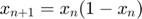
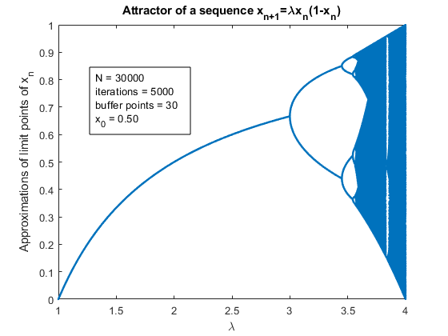

EXERCISE 1 - TAYLOR APPROXIMATION OF SINE
Contents
- Approximation of sin(0.109)
- Error decreases with more Taylor terms used
- Error decreases when an approximated x is closer to zero
- EXERCISE 2 - PLOTTING ATTRACTOR OF A SEQUENCE
- A random plot of a attractor
- Plots of attractors are almost identical for any X0
- There are more limit points for every lambda
- If not enough iterations is performed, the precision decreases
Approximation of sin(0.109)
Approximates sin(0.109) using the first 3 terms of the Taylor sequence for sine around x=0.
format long;
x = 0.109;
n = 3;
approx1 = sine(x,n)
approx1 = 0.107720357239549
Error decreases with more Taylor terms used
Approximates sin(0.109) using 0,1,2,3,4,10,100, and 1000 terms.
approx2 = sine(x,[0 1 2 3 4 10 100 1000]) % Determines the error of the 1st, 5th and 8th element of approx2 in order % to show that the approximation of sine improves as the number of terms % in the Taylor sequence increases. real_sine = sin(0.109) error1 = abs(real_sine - approx2(1)) error5 = abs(real_sine - approx2(5)) error8 = abs(real_sine - approx2(8))
approx2 =
Columns 1 through 3
0 0.109000000000000 0.107704971000000
Columns 4 through 6
0.107720357239549 0.107720174435637 0.107720176582029
Columns 7 through 8
0.107720176582029 0.107720176582029
real_sine =
0.108784290015732
error1 =
0.108784290015732
error5 =
0.001064115580095
error8 =
0.001064113433703
Error decreases when an approximated x is closer to zero
Approximates sin(x) for values closer and further from x=0 while keeping the number of terms constant.
approx3 = sin([-1 -0.1 -0.01 0 0.01 0.1 1]) % Determines the error of the 1st, 2nd, 3rd, and 4th element of approx3 in % order to show that the approximation of sine improves when x closer to % zero is chosen. error1 = abs(real_sine - approx3(1)) error2 = abs(real_sine - approx3(2)) error3 = abs(real_sine - approx3(3)) error4 = abs(real_sine - approx3(4))
approx3 =
Columns 1 through 3
-0.841470984807897 -0.099833416646828 -0.009999833334167
Columns 4 through 6
0 0.009999833334167 0.099833416646828
Column 7
0.841470984807897
error1 =
0.950255274823628
error2 =
0.208617706662560
error3 =
0.118784123349898
error4 =
0.108784290015732
EXERCISE 2 - PLOTTING ATTRACTOR OF A SEQUENCE
A random plot of a attractor
Take a sequence

and plot the attractor for lambdas in the interval [1,4]figure(12) attractor(1,4);

Plots of attractors are almost identical for any X0
Notice that the attractor is almost identical for any value of X0, such that 0<X0<1.
for i = 1:9 figure(i) attractor(1,4,3000,500,30,i/10) end
There are more limit points for every lambda
For sufficiently big number of iterations K, the greater the number of buffer points L allows us to approximate more limit points. This is especially useful for 3.5 < lambdas < 4 as the number of limit points there seems to be high from the graph
% We lose some limit points if we assume there is only one limit point for % every sequence figure(13) attractor(1,4,3000,500,1) figure(14) attractor(1,4,3000,500,5) figure(15) attractor(1,4,3000,500,15) figure(16) attractor(1,4,3000,500,30)
If not enough iterations is performed, the precision decreases
We graph becomes blurry if less iterations K is performed
figure(10) attractor(1,4,30000,50) figure(11) attractor(1,4,30000,5000)